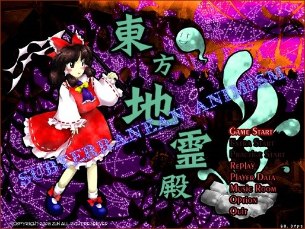

雪の降る冬の博麗神社。 一度地震により倒壊した神社であったが、今はすっかり元の姿を取り戻している。 そんなある日、博麗神社の巫女、博麗霊夢を驚かす出来事が起こった。 それは博麗神社の近所に突然の立ち上る白い柱、間欠泉である。 普段なら何か出来事が起こると彼女は解決に向かうのだが、その出来事は彼女を 驚かすと同時に喜ばす物だったのだ。 間欠泉は雪を溶かし、周りには人間、妖怪問わず体の疲れを癒す温泉が湧く筈だった。 ――しかし、霊夢の希望的観測は外れた。 間欠泉から湧いている物は温泉水だけでは無かったのだ。 次々とわき出る異形の者達。地霊――地底に住む者達であった。 東方地霊殿 〜 Subterranean Animism. |

| 東方Project 第十一弾!! とうほうちれいでん 「東方地霊殿 〜 Subterranean Animism.」は、何処か懐かしい世界に何処かゆるいキャラ達が、 とてつもなく激しい弾幕を繰り広げるシューティングゲームになっています。 ＊このゲームには過激な弾幕シーンが含まれております 小さなお子様や、弾幕アレルギーの方はアレしてください。 |
・マニュアル
| ・ダウンロード（体験版、アップデートパッチ） | |
| 今後の予定 | |
|---|---|
| ○体験版CD | 5/25「博麗神社 例大祭」にて配布 |
| ○体験版ダウンロード | こちらのページで |
| ○製品版 | 2008夏コミにて発表予定、その後、各同人ショップでも委託販売が開始する予定です。 |
| 体験版と製品版の違い 体験版は３面までしか遊べません。 ＊また、ゲームの仕様、ノリ、諸々は、何の予告もなく大変更する事もあります | |
| 動作環境 | |
|---|---|
| 必須環境 | |
| ＯＳ | Windows 2000/XP なお、DirectX 9以上がインストールされていること |
| ＣＰＵ | Pentium 以降（もしくは互換）のCPU （推奨 1GHz以上） |
| メインメモリ | 空き実メモリ 128M以上必要 |
| ビデオカード | DirectX8.0以上の DirectGraphic 対応の高速なビデオカード(必須 VRAM32M以上) 今のところ正常に動くことが確認取れているビデオカード ・nVIDIA GeForce シリーズ ・ATI RADEON シリーズ 等 |
| その他 | パッドコントローラ 高い暢気さ ダンジョンを愛する心 |